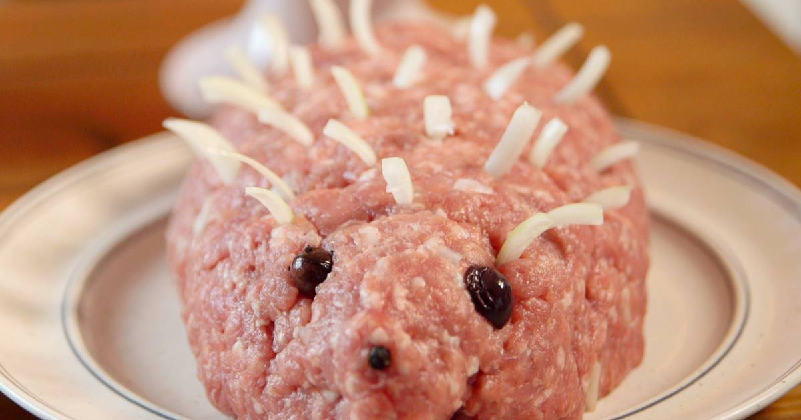

Mettigel

Your friends having a party and as a guest with excellent manners and you don't want to show up bare-handed? I got you.
The Mettigel is the dish which can not be missed at a proper party.
It is easy to prepare and contains only three ingredients, minced pork onions and olives.
If it isn't clear by looking at the image what Mettigel is: It's a hedgehog...made of raw meat.
Ingredients
- Minced pork (a decent Mettigel should atleast have 1 kg)
- Onions(amount depends on the size of the Mettigel)
- A couple olives
Step-by-step instruction
- Give the minced pork a nice round shape. Thats gonna be the hedgehog's torso.
- Slice the onions and stick them into the Mettigel to simulate the spikes.
- Last but not least: Use olives for the eyes and the nose. Be creative!
- Voilà. You created a beauty. Be proud of your work and enjoy the envious looks at the party.